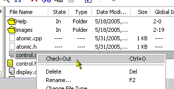

Files that are under Code Co-op's control are write protected. You cannot modify them without checking them out. (Many development environments integrate with Code Co-op and let you check out files either directly or in response to editing.)
In Code Co-op, you check out a file by selecting it in the Files tab and pressing the Check-Out button or by right-clicking on the file to invoke the context menu as shown here.

You should also use Code Co-op's UI to perform such file operations as rename (in-place edit), delete, and move (cut and paste).